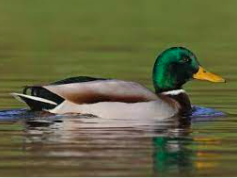

Duckopedia
Home
Fun Facts
Duck Hall of Fame
Duck Recipes
CS50 Duck
Fun Facts: Something to Pique Your Interest
Fun Fact #1
Fun Fact #2
Fun Fact #3
Fun Fact #4
Fun Fact #5
Fun Fact #6
Fun Fact #7
Fun Fact #8
Fun Fact #9
Fun Fact #10
Mallards are the most common duck in the world
